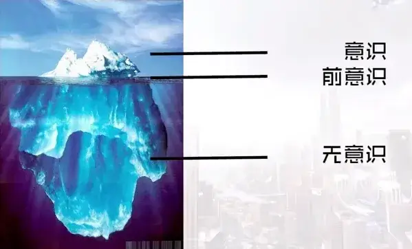
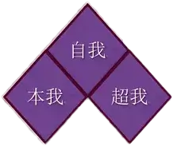
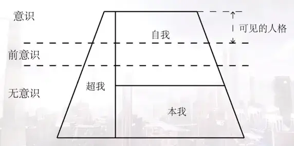
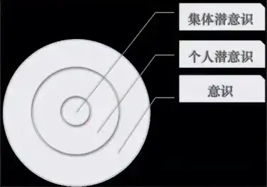
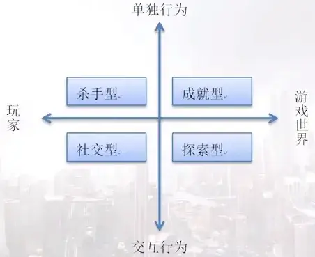
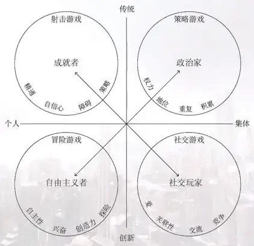
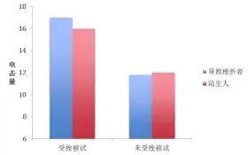

第四章 咱们游戏玩家
4-1 游戏玩家概述
同学们大家好，欢迎大家回到游戏心理学的慕课。
咱们前面课课里说了很多比如抓住玩家的注意、玩家行为塑造、还有游戏黏性、沉浸、心流等等，在游戏世界里，游戏设计师的重要工作就是想方设法留住玩家，让玩家离开之后还想要再回来继续玩游戏。
在创作游戏作品的时候，我们会假设出目标玩家的特点还会尽力迎合他们的需求。如果这种假设是经过实际调研之后得出的，那么多数会比较接近实际情况；而如果这种假设是我们根据自身的知识和经验判断得出的，就会因为提出假设者自身的知识和阅历不同而存在一定程度的偏差。
以己推人是我们假设他们特质时惯用的方法，但人就像雪花一样，没有两个是完全相同的。就像亨利·莫里说的：“我们所有人都和其他人在某些地方相似， 而又在某些地方和其他人不同。”这不仅包括我们生理层面上指纹、虹膜等外在特点，还包括我们所有的个人特质、能力、信仰、目标和经验等内在特征。
这种内在特征相对稳定，就像我们重逢多年未见的老同学，最开始可能会因为他们外在的变化而惊讶，但不久就会发现这些人仍然“万变不离其宗”，还都是原来的脾气秉性。
在游戏中，面对同一个游戏机制，不同玩家的应对方式也会完全不同，这也是游戏中玩家总会有不同“派系”和行为模式的原因。对玩家的研究是游戏心理学中重要的组成部分。理解不同类型玩家的个性将有助于我们更好地细分目标受众，从而减少因为对玩家不了解而出现设计偏差的几率。
在这里我们可以从心理学对人格的研究来入手，从个体到群体，研究不同玩家在游戏中的感受和态度。
人格呢，可以定义为源于个体身上的稳定行为方式和内部心理过程。心理学家通常认为，稳定的行为方式是指个体的差异，因为重要的前提在于人格是稳定的。我们可以跨时间、跨情境地来审查这些稳定的行为方式。
比如说，我们可以假设和预期今天活泼开朗的人明天也会活泼开朗，在工作中喜欢竞争的人在运动场上可能也会乐于竞争。所以我们有时候会说“这很像他会做的事”，就是在承认这种性格的稳定性。但这也不是说一个外向的人在任何场合都会情绪高涨，更不是说人会一成不变，不是要刻板或者教条，大家要把握这中间的差别。
**我们的不同行为不仅仅是对所处情境的反应，更重要的是内部心理过程。它与发生在人与人之间的人际过程不同，是从人的内心发生、影响着人怎样行为、怎样感觉的所有情绪、动机和认知过程。**看恐怖片时产生的恐惧感是由影片引起的，但我们如何利用这一过程，这一过程怎样与个体差异相互作用，起到了决定我们个人性格的作用，换句话说，我们每个人对恐惧的不同表达方式和应对方式是来自于我们内部的，这类问题是咱们下面几节课要讨论的重点。
好，这节课先到这里，下节课咱们来谈谈一个特别有名的心理学家的研究。
4-2-1 人格结构理论 1
同学们大家好，欢迎大家回到游戏心理学的慕课。
咱们上节课结尾预告了一下，说这节课要讲一个特别有名的心理学家的研究， 这位心理学家是谁呢？这位心理学家，即使是对心理学没有什么兴趣的同学可能也听说过，就是弗洛伊德。
咱们这几节课是吧玩家作为一个“人”的个体来研究的，那么要分析“人” 就不得不提弗洛伊德的人格结构理论。

弗洛伊德最初把人格划分为意识、前意识和无意识，并将这种划分成为解剖模型。无意识也叫潜意识，潜在的潜，因为跟第二层的前意识从发音上不好区分， 咱们在这里就用“无意识”这个翻译，避免大家理解上的偏差。
**意识是我们能够觉察到的想法，新想法涌出，其他想法消失，意识的内容不断发生变化。**我们平时说“我想……”指的就是自己能意识到的部分。但在大脑存储的信息中，意识处理的信息只占很小一部分，如果愿意的话，我们可以轻而易举地调集无数想法到意识中。比如大家可以回想一下今天早上吃的什么早饭？ 我们玩的第一个游戏是什么？这些大量的可再现信息构成了前意识。有人认为意识与前意识构成了思维的全部内容，但弗洛伊德认为这仍然只是冰山一角，我们内心想法的主体位于无意识当中。这里的内容完全无法直接触及，它们无法被提取进入意识当中。但是，正是这些察觉不到的无意识的内容决定了人的许多日常行为，理解无意识对行为的影响，是理解精神分析思想的关键。

在他之后的研究中，弗洛伊德发现解剖模型在描述人格上还存在局限，因此又创立了结构模型，把人格划分为本我、自我和超我。
大家可能都有这种时候：马上要交作业了，但是又忍不住想玩游戏，然后内心就天人交战，就是组成人格的各部分发生冲突的表现。弗洛伊德认为我们在出生的时候只有一个人格结构，即**本我。这是人的自私部分，只与满足个人欲望有关。本我遵循快乐原则而采取行动，不收任何物质和社会的约束。**比如说婴儿看到想要的东西就会伸手去抓，无论它是否属于自己或是否有害，这种反射行为一直持续到我们成年。本我的冲动伴随我们一生永远存在，它们必须受控于健康成人人格的其他部分。如果本我完全依赖反射行为来得到想要的东西，那在现实生活中，快乐冲动多数时候都会受到挫败。所以本我还会一个绝招来满足自己的需要，那就是当我们非常渴而周围又没有水的时候，我们的本我可以在引导下或者干脆自发地去想象一片梅林，从而暂时满足自己的需要，这故事特别熟，没错，就是望梅止渴。我们可能会怀疑本我冲动和愿望实现观点在自己身上很难找到证据，因为本我是完全隐藏于无意识中的。而弗洛伊德认为大部分本我冲动与性和攻击有关，因此我们意识不到它们或许也是件好事。
**随着我们出生后两年间的成长与环境相互作用，人格结构的第二部分会逐渐发展起来，这就是遵循现实原则的自我。自我会考虑情境现实性的基础上尽力满足本我的冲动，把咱们社会不能接受的野蛮无礼不顾别人的本我冲动控制在无意识当中，然后以考虑行为后果的方式来采取行动，这样就能减轻因冲动没有被满足所引起的紧张，又能不去破坏或者违背社会规则而让自己受到伤害。**而且自我能在意识、前意识和无意识各部分之间自由活动，真是特别辛苦，为我们的人格健康也是操碎了心。
大约 5 岁左右，我们人格中的第三部分开始形成，这就是代表社会的、特别是父母的价值和标准的超我。超我对能做和不能做的事情有更多限制和更高要求。 当我们看到朋友在游戏中有某件我们求而不得的装备时，本我冲动也许想据为己有，自我会意识到这样做会导致问题，因而可能会试图寻找拿走装备而不为人知的方法。但即使有办法偷走装备而不被抓住，超我也会禁止这一行为。因为偷窃是违反道德准则的，超我对付这种情境的武器是产生罪恶感，令我们寝食难安， 直到把东西还回去才能得到缓解，因此也有人直接把超我翻译成良心。同时，超我还为自我提供榜样，用来判断我们自己的某一个行为是否合乎道德，并因此受到赞扬。如果孩子没有充分建立超我，成年后就会缺乏对偷窃和撒谎的内控机制； 如果超我过于强大过于遵循道德，使自我面临难以实现的完美标准，我们就会体会不断出现羞愧感和罪恶感。

本我、自我和超我就是这样相互补充又相互对立，在一个健康人身上，强大的自我不允许本我或超我过分地掌管人格，在我们意识之下的地方，存在着自我放纵、考虑现实性和强制执行严格道德准则三者之间永不休止的斗争。
好，这节课先到这里，咱们下节课再继续。
4-3 防御机制
同学们大家好，欢迎大家回到游戏心理学的慕课。
咱们继续上节课的内容来看弗洛伊德的人格理论。
弗洛伊德对于无意识心理的描述可能令我们感到困惑而又窘迫，因为他研究的是很多我们不想去承认和面对的问题。精神分析的经典案例中有很多无意识主题，比如对父母的憎恨、对配偶的攻击性、对儿时创伤经历的记忆以及其他对意识来说具有威胁性的想法。自我会使用很多处理技术把这些不受欢迎的想法和欲望排除在意识之外，来减少或避免焦虑，这些技术统称防御机制。咱们今天就一起来看几个防御机制。
**首先是被弗洛伊德称为“整个精神分析理论结构的基石的，最重要的防御机制”：压抑。压抑这个词看起来是有点儿消极的意味，但实际上却是一种积极的努力。又是咱们这个任劳任怨的自我，通过积极的努力，把那些威胁着我们的东西排除在意识之外，或使这些内容不能接近意识。**我们每个人的无意识中都有不愿意带入意识的想法，因此我们都会自我压抑。而压抑也是要付出代价的，在它非常稳定、又要主动的使用过程中需要自我持续地消耗能量。因此，如果没有一个强大的自我就很难维持稳定的人格。比如对于创伤性事件，有的人会选择把能够伤害自己的经历压抑于意识之外，再被问及该事件时，就会毫无印象。所以简单来说，压抑就是自我把我们从可能会造成伤害的内容中隔离出来，这个伤害不是消失了，而只是被隔开了，会不会有一天又被提取到意识当中呢？确实会存在这种可能性。
除了这个基石之外呢，防御机制还有好几种，比如替代。替代是说把无意识冲动导入一个没有威胁性的目标去发泄。在现实生活中，如果一个人受到伤害之后肯定会产生负面情绪，可能是感到愤怒想要报复，但直接向对方发泄愤怒可能招致更严重的后果，所以，我们可能会将怒气转向家人或朋友。虽然这样做会带来其他问题，但是向威胁较小的人发怒，是自我在快速权衡之后找到的最具性价比的解决方式。必须要说的是，如果我们意识不到这一点而习惯这样做的话，长期的这种迁怒是一定会影响到我们的生活的。所以在心理疏导和治疗的时候会有用人形的沙袋或者其他的东西让我们去打去发泄，这种方法就是把我们本身受到伤害而引发的无意识冲动引导发泄出来。不过在咱们身边除了真的打人和破坏之外，还有另外一种类似的解决方法，就像咱们前面课里提到过的，在游戏里实施一些社会规则不允许的行为，杀人放火无恶不作，通过这种方式来纾解自己受到的伤害。这种迁怒会造成在单机游戏里可以是游戏规则内的，比如 GTA 系列游戏，也可能是网络游戏中对其他玩家的伤害，比如咱们后面课里会提到的杀手型玩家。
最后一种要说的防御机制就比前两种要正面多了。**这种防御机制叫做升华。 如果说压抑用多了会影响自我功能的发挥，那么升华用得越多，我们自身的创造性就会越强。某种意义上说，升华是唯一真正成功的防御机制。在升华的作用下， 自我会把危险的无意识冲动转化为社会认可的行为。**比如攻击性的本我冲动可以被升华为对身体抗强烈的体育运动，而攻击性强的运动员会被看成英雄并受到嘉奖。在升华过程中，本我可以表达其攻击性，自我无需耗尽能量抑制这些冲动， 反而能在升华后的运动中获得乐趣并被他人喜爱。那么在游戏里，升华的行为就不再是在游戏里直接杀戮或者破坏，而是可以是其他类型游戏的各种游戏行为， 可以是去直接消耗体力的体感游戏、可以是使用真实地理位置的增强现实游戏， 当然可以是五连坐开黑一起去完成夺旗的电子竞技。升华让我们的游戏行为也能在不伤害他人的前提下完成对本我的满足。
这样我们就能更好理解，为什么很多游戏把操作的“爽快感”等等作为游戏制作的重点之一，因为它本身就是为了更好地去让防御机制发挥作用，让玩家通过游戏将攻击冲动顺畅地转化为游戏操作。
好，这节课先到这里，课后同学们可以观察身边同学朋友的游戏行为，或反思自己的玩游戏前后的心情，是否防御机制在其中为我们情绪的改善发挥了作用？
咱们下节课再见。
4-2-2 人格结构理论 2
同学们大家好，欢迎大家回到游戏心理学的慕课。
咱们前两节课是基于弗洛伊德的人格理论来展开的。在精神分析学派中还有一位心理学家的观点也很有意思，这位心理学家就是荣格。

荣格把人格称为心灵，心灵包含一切意识和无意识的思想、情感和行为。它由意识、个体无意识和集体无意识三个部分组成。跟弗洛伊德的理论类似，荣格也认为意识是人的心灵中唯一能够被个体直接感知到的部分。自我是意识的核心， 它由各种感知觉、记忆、思维和情感组成。意识和自我是一致的，都是为了使人格结构保持同一性和连续性。同时，意识也在不断发展，重新塑造和完善新的自我，他把这一过程叫做个性化。
前面课程讲动机的时候咱们提到过生物的本能或者说行为库，说动物有一些能力是不学就会的，比如说鸟类筑巢、蜘蛛结网等等，那么这部分行为库也是应该有地方存储的。荣格就是更多考虑了这部分东西究竟在哪里。
根据这个理论我们可以看到，荣格认为经过上千年的繁衍，人类作为一个生物物种来说也有共通的东西，这些共通的集体潜意识的内容比个体的潜意识更深层，更加难以觉察，它的表现可能也让人不太容易被联系到集体潜意识上面。
以这个理论为基础，接下来咱们就来看看，集体潜意识到底对游戏玩家存在哪些影响。
在这里咱们来从不同性别玩家玩游戏的表现来进行研究。那么我们会发现， 从选择游戏类型开始，男女玩家就已经出现差异，什么样的差异呢？简单说就是更多的男性玩家偏爱扩展型游戏，更多的女性玩家偏爱维护型游戏。
**扩展型游戏鼓励玩家通过外在形式突显自身的存在。**它们鼓励玩家去探索、 去征服、去控制或去争取某些优越性。或者说得简单粗暴一点儿，就是通过打打杀杀来体现价值。
维护型游戏鼓励玩家保持既有状态，维持其所控制元素的秩序，这些内容的吸引力最主要的就是它们被玩家所占有，说得极端一点儿就是，玩家是通过控制已经占有的物品来获得快乐。
当男性玩家体验游戏时通常希望战胜某些内容或表现更杰出，而女性则更倾向于反复发展某些对象内容还有不断地互动然后得到反馈。不断挑战不断挑战敌人的内容可能对女性玩家的吸引力稍弱；但这正好迎合男性群体的口味，因为这是多数有战斗元素的游戏。
有些游戏是男女玩家都会选择的，比如《口袋妖怪》。但观察他们的体验方式时我们又会发现显著的不同。女性体验《口袋妖怪》的方式与玩《模拟人生》 类似：创造角色，角色随时间流逝逐步发展。她们把《口袋妖怪》看作“宠物小精灵”，培养精灵的过程是有趣的，最终完成故事获得胜利是完成这些精灵养成的附属。而男性玩家玩《口袋妖怪》时通常会去除其精灵的个性元素。虽然有些大家都有自己最喜爱的精灵，但通常他们只是考虑哪个精灵能够帮助他们获胜。 所以其实《口袋妖怪》和 MMORPG 游戏有它们自己的游戏机制和刺激反馈系统， 但是仔细想想，它们也都是处在各自类型的边缘地带，让我们再里面都能找到适合自己的游戏方式。
那么从集体潜意识的角度来看，这种类型化的差异可以追溯到上古时代，在人类社会的最初阶段，为了保证种群的繁衍发展，男性主要负责什么？负责狩猎和保卫家园之类的工作，那么女性呢，主要担负建造、维护和孕育后代的工作。
这种倾向性明显的分工方式随着人类社会的进步而逐渐淡化，但是在现代社会中我们仍然会认为男性更加好斗，而女性更具协作精神，就是我们曾经习惯的行为慢慢沉淀融入集体无意识成为人类的生物本能，所以也有可能正是集体潜意识让我们在选择游戏时也会被这种内在的本能需要所引导，以自己最喜欢的方式来享受游戏。
好，这节课先讲到这里，咱们下节课再来继续讨论游戏玩家。
4-4-1 玩家分类 1
同学们大家好，欢迎大家回到游戏心理学的慕课。
咱们前面课程里提到过杀手型玩家这个词，这节课咱们就来看看这个分类方法。
这种分类方法是游戏研究的先驱巴图，在 1996 年提出来的。他通过建立一个直角坐标系，以玩家行为取向作为横纵坐标构建了这个巴图模型。

能够很容易看懂，是吧，玩家的行为取向可以理解为玩家更喜欢在游戏中所做哪些事情，是更喜欢面对人，也就是其他玩家，还是更喜欢面对游戏世界；是更喜欢单方面输出一些行动获得结果，还是更喜欢以尝试得到不同反馈作为游戏的乐趣。那么根据不同的取向的组合，就得到了四个基本类型。
首先第一个，**喜欢将行为作用于别人来获得让自己满意的结果，就是杀手型玩家；杀手型玩家在游戏中主要通过破坏性的行为来获得快乐。**咱们前面课说过， 迁怒是一种防御机制，我们通过防御机制来保护自己不被所受的伤害和压力击垮， 所以杀手型玩家在游戏里的杀戮和破坏，其实就是一种防御机制的体现。他们在游戏里会练技巧、会升级、会探索世界、会参加公会，但这些都是为了更好地去虐别人。
然后咱们来看第二种，**喜欢更多将行动作用于世界，也就是升级做任务征服游戏世界的，是成就型玩家。**成就型玩家在游戏里的主要目的就是提升装备和自己角色的等级，获得游戏能反馈的所有成就，他们探索地图是为了得到新资源或者任务，社交是一种休闲，也是直接获得别人认可和崇拜的途径；他们也会在游戏里跟别的玩家战斗，但跟杀手的区别在于不是为了杀人而杀人，而是是为了减少抢怪的玩家、打败敌对阵营、或者获得装备。
第三种呢，**是喜欢探索游戏世界，找到别人没有发现的东西来获得快乐的探索型玩家。**探索型玩家可以是从感性出发的，也可以是从理性出发的，他们在游戏里更多喜欢不断尝试跟这个虚拟世界交互，看看有没有新鲜事或者发现隐藏的技巧和 bug。对他们来说升级和联系技巧是为了更好地区探索游戏，互相打打杀杀就很没意思，PK 之类的活动更主要是为了研究游戏的技能系统和战斗系统， 跟其他玩家的交流也更倾向于讨论游戏世界而不是单独的玩家个体。
最后一类，**在游戏里更喜欢与其他玩家互动交流的，我们成为社交型玩家， 对社交型玩家而言，游戏更像是一个媒介，一个社交的平台，在这个跟媒介和平台里，和别的玩家建立关系，沟通和互动是最重要的。**对游戏的探索能够帮助他们理解其他玩家谈论的是什么，获得高级装备可以是一种谈资，可以帮助他们获得其他类型玩家的关注和认可，从而实现交流。
不同类型游戏中，这几种类型玩家的数量也是不同的。比如在 MMORPG 中， 是成就型>杀手型>社交型>探索型的，而有些游戏中可能就是社交型>成就型>探索型>杀手型，甚至可能都没有杀手型存在的空间。
从对游戏的依赖程度看，成就型玩家>社交型玩家>杀手型玩家>探索型玩家。 成就型玩家对游戏的依赖度最高，他们很珍惜游戏中获得的装备，除非当他们无法因为现实的原因无法再继续游戏，或者游戏无法再提供给他们成就感，他们是不会轻易放弃自己已经投入很多的游戏的；而社交型玩家如果发现朋友越来越少， 那么他们也会觉得无聊离开游戏，杀手型玩家如果发现游戏里可虐的玩家少了，或者自己会被虐，那么就会换一个游戏了，而探索型玩家在认为理解了游戏机制和技巧的时候可能就会离开，可能根本就不存在对于某一个游戏的忠诚。
在为游戏消费意愿的方面，探索型玩家可能是最不愿意为游戏消费的玩家群体了，因为他们很少沉溺于一款游戏，如果一款游戏要花很多钱，那他们会马上换一款不收费的新游戏。而成就型玩家为了实现自己的价值，杀手型玩家为了更好地杀戮，社交型玩家为了自己的表现欲可能都或多或少会在相应项目上花点儿钱。
根据这个分类方法，同学们可以思考一下你们在游戏中更多的时候是哪种类型？在你经常玩的游戏中，不同的机制是否对不同类型的玩家提供了有针对性的服务呢？
好，这节课先讲到这里，咱们下节课再来继续讨论其他的分类方法。
4-4-2 玩家分类 2
同学们大家好，欢迎大家回到游戏心理学的慕课。
这节课咱们来看另外一种对玩家的分类方法，这种分类是基于拉扎罗的趣味类型理论来的。

我们还是用直角坐标系来进行类型划分，横纵轴交界同样也划分出了四种类型，而且他们是两两对立的。这四种类型也不太会孤立存在，在他们的分类中我们能看到微妙的心理差异和多种玩法行为。
相临的两个分类在内在是有相似的心态和表现的，比如说在偏向横轴个人的两个区域：成就者和自由主义者在个人主义这个维度上的心理状态是相近的，而成就者和政治家在玩游戏的规则性上又非常一致。这种相似性又因为另一轴的存在而产生了差异。
具体来看，在这个模型中有两条轴线，水平轴体现的是个人和集体这两个极端，它代表的是玩家更愿意让自己服从于集合意志，还是喜欢自主行事的情况。 纵轴传统还是创新其实是用来区分严格按照规则还是随意松散的玩法，是执行规则还是无视规则。
所以我们看到这里政治家并不是说在游戏里呼风唤雨的人物，而是说这类玩家有集体主义的倾向，并且会倾向于严格执行游戏的规则，甚至把自己当做是游戏当中集体秩序的代表，会在游戏里成为秩序的维护者，他们更多考虑的是游戏里的生态，或者说游戏环境。
那么跟他有交集又不尽相同的有两个，一是同样重视规则和秩序，但是更加个人主义倾向的成就者，成就者跟上节课说的巴图模型的成就型玩家称谓相近， 表现也相近，但是是用不同的划分方法划分出来的。那么成就者会把精通掌握游戏、获得更高等级、完成终极任务视为游戏目标，更像是一个孤独的斗士。
另一个与政治家有交集的是社交玩家，他们一样都是集体主义取向，但是社交玩家并不在乎精通掌握系统规则，也没兴趣追求玩游戏的高超技巧，他们骨子里对待游戏是极具随意性的，游戏只是他们打发时间的一种方式，所以游戏的规则对他们来说没有什么更高的价值，也就不会像政治家那样以天下为己任去守护规则，而是怎么方便怎么来。
最后一种是跟成就者和社交玩家有交集，但是跟政治家完全对立的自由主义者。这个名字体现了这类玩家的个人主义倾向，但他们的区别在于成就者会在规则框架之下来升级做任务获得高分，而自由主义者则无视规则甚至打破规则，因为这类玩家爱冒险，不喜欢重复，喜欢追求独特的体验，会为省事而选择捷径，对他们来说，游戏的系统和规则其实更像是了一个对手。
所以这就好理解咱们开始的时候说的两两对立了：
政治家和自由主义者，一个是集体主义的秩序维护者，一个是个人主义的规则破坏者；自由主义做的事情是政治家极力禁止的，政治家做的事情是自由主义者毫不认同的。
然后**成就者和社交玩家，一个是遵循规则追求进步的个人主义者，一个是无视规则只关心社交的群体分子；**成就者不能理解社交玩家在游戏里到底要干什么， 社交玩家虽然觉得成就者很厉害，但是跟自己追求的又完全不搭界。这就像是玩守望先锋的玩家和玩偷菜之类网页游戏玩家的差别，圈子不同，如何相爱，是吧。
| 类型 | 特点 |
|---|---|
| 政治家 | 集体主义的秩序维护者 |
| 自由主义者 | 个人主义的规则破坏者 |
| 成就者 | 遵循规则追求进步的个人主义者 |
| 社交玩家 | 无视规则只关心社交的群体分子 |
这四种类型不难记，要更好理解趣味类型模型，其实就是更多理解这几种类型间的关系，没有哪种类型是脱离其他类型独立存在的，他们之间的区别和联系都是内在的，是不是有可能互相关联和转化，什么情况下可能会转化，同学们课后可以进行思考。
这节课先讲到这里，下节课咱们再来介绍第三种分类方法。
4-4-3 玩家分类 3
同学们大家好，欢迎大家回到游戏心理学的慕课。
这节课咱们来看之前提到过的墨菲博士也有对玩家进行分类的方法。他的方法是以游戏玩家的自我价值和责任感，这两个更加内在和根本的指标出发的。
在这里呢，自我价值就是我们想击败对手意愿的高低，换句话说高自我价值的玩家非常希望通过击败对手来体现自我价值，而低自我价值的玩家则不在乎战斗和战斗的结果；然后责任感呢，就是想要提高自己技术水平的迫切度和不断学习各种技巧让自己不断提升能力的愿望的强度。

所以这样来看呢，咱们又有了新的一个直角坐标系，横轴是自我价值，纵轴是责任感。然后四个象限分别也是对应着四种类型的游戏玩家。
首先是高自我价值高责任感的玩家，这部分玩家是非常乐意花时间在修炼自己的游戏技能上面，非常想切实地提高自己的游戏水平；同时又非常渴望通过对战来体现自己的能力，成为大家公认为胜利者，是让他们特别有成就感的事，所以表现出来就是有很高的竞技欲望。
第二种呢，是高自我价值低责任感的玩家。他们同样希望能够通过战斗的胜利来获得别人的认可，特别喜欢争斗，有很高的求胜欲望，但是因为这个低责任感，让他们不想花时间在反复去练习游戏对战的技巧上面，而可能会考虑通过找代练或者其他任何方法来获得排名或者认可。
而跟这类玩家相反的是低自我价值高责任感的玩家：他们埋头苦练又不求名利，有点儿少林寺扫地僧的感觉，如果是在团队游戏里呢，会是特别受队友喜爱的同伴，因为他不会逮谁跟谁打，而只是要不断完善自我，成为团队里特别可靠的同伴，也可能会成为团队指挥之类的角色。
最后一种就是低自我价值低责任感的玩家，玩游戏不是为了获胜，也不是为了磨练技巧，就是很纯粹的为了跟朋友一起享受快乐时光。从某种角度来说，这类玩家可能是玩得最没有负担，最能在游戏里自娱自乐的类型。
这四种类型放在一起看，其实没有说哪种就一定好，哪种就一定不好，因为不同类型的玩家其实都玩得挺开心的。这里比较下来，我们会发现一个问题：高自我价值高责任感的玩家，其实在内在特点来说，更接近咱们很熟悉的另一个领域里的人，是哪类？是体育运动员。要不断磨练自己的战术和技巧，要保持较高的竞技热情，然后在竞技对抗中去发挥最好的状态取得胜利，所以从这一点来看， 电子竞技被列为体育项目之一确实有道理的。
好，这节课先讲到这里，下节课咱们来讲另一个话题，玩家的情绪。
4-5 情绪
同学们大家好，欢迎大家回到游戏心理学的慕课。
咱们前面主要讲了人格理论，讲了几种玩家分类的方法。那么这些分类方法并不是教条的，并不是说所有游戏就只有这几种分类，但是大家可以从这些分类方法中，看到研究的思路以及可能性，也期待大家通过思考来完善这些理论或者建立自己的分类。回过头来说，无论是什么样的人格或者哪种类型的玩家，在生活中在游戏里都会有相似的体验，就是咱们这节课要讲的：情绪。
情绪是一种经常波动的东西，我们每个人都有玩得很快乐的时候，也有一天都不顺心情绪很糟糕的时候，虽说都是体验到开心或者悲伤，但其实情感的强度也是因人而异的。情感强度是说我们体验到某种情绪的力量或程度。高强度的人不仅会体验到强烈的情绪，还会有表现出大幅度变化的倾向。科学家倾向于低情感强度，艺术家倾向于高情感强度，但无论高、低情感强度的人在测量快乐和幸福时得分是一样的，也都能达到自己的目标，只是采取的情感方式不同而已，并没有高下之分。
人类很早就开始创造艺术，现代艺术已经过渡到需要解释创意的情感艺术。 比如说看到爱德华 · 蒙克的《呐喊》，我们可能不会马上体会到那种在美丽的天边听到可怕尖叫的经历，而只是静静地看着这幅图画去体会其中所描绘的情绪和感受。
而当下我们玩的电子游戏就可以去模拟各种情境，表达跌宕起伏的情感，然后激发玩家的情绪。在游戏里我们可能都体验过那种在有限的空间里被敌人穷追不舍的恐惧，然后在战胜敌人或者找到藏身之处后又松了口气，可能还有一种被救赎的感觉。这些都是非常真实的情绪的反应，玩家在游戏里能够体会到真正的害怕与放松，经典的架上绘画艺术就很难达到如此效果。
很多游戏会让玩家选择故事的发展方向，让玩家按自己的心意来享受游戏过程，但是这种自由也是有限度的，因为以现在的游戏来说，不说未来几十年之后的情况，现在的游戏仍然是在可控的游戏框架之下来进行的，并没有纯粹的完全的自由。说得直白一些，游戏就是比其它媒介更有操控性和多样性，这一方面让游戏的情感传达更加容易，但另一方面也更容易因为满足不了玩家的情感需求而失败。
在电子游戏不太长的发展历史当中，日本制作了不少出色的角色扮演游戏， 也诞生了不少经典的游戏角色，甚至还有了日式 RPG 的说法。但是这些公司也有自己的问题，比如说一直停留在同一个类型的题材里，或者游戏角色的设计比较雷同，这就很难为玩家再创造出更有趣的游戏世界了。
回到游戏里的情绪激发的问题，游戏要做的是给玩家提供一个可以沉浸的虚拟世界，在这个世界里各种可见的对象都是数字化的、虚拟的，是不会对玩家造成伤害的，所以对于情绪的引导也要是相对安全的。激发安全的情绪反应的机制， 主要就是以移情和情绪性记忆为基础的。简单来说，移情是我们能够实现情绪代入的基础，而情绪性记忆就是把我们会记住曾经经历过的各种情绪的感受。那么这样，我们就能在看到玩到游戏的时候利用移情唤醒自己的情绪性记忆，进而激发出映像情绪。
映像情绪可不是虚假的情绪。真实情绪体验的时候我们可能会心率增加、手心出汗，而在映像情绪出现时，这些身体反应也同样会出现。所以映像情绪在还原特别强烈的情绪的时候就会有点儿危险了，比如有创伤后应激障碍的军人再玩使命召唤之类的游戏。除去这种特例，大多数游戏还是要通过不同的刺激方式来加强映像情绪的。比如对刺激物的特殊表现、夸大刺激物、多重刺激渠道并用、 使用普遍存在的情绪触发物——比如爱、死亡、胜利、创造连贯的情景和因果的链条等等。
咱们前面谈到过失败对玩家的影响，这节课我们从情绪的角度再来看这个问题，就能更好解释为什么玩家失败就有可能离开游戏。我们多数人都有自己所操作的游戏角色阵亡的经历，大多数情况下它们是可以复活的。也有不少人体验过游戏角色的永远死亡，玩家投入了时间和精力去积累资源和技能，然后很大程度上因为技术失误，所有时间精力，全都在枪林弹雨中付诸东流。尽管知道死去的只是虚拟世界的数据，但是我们仍然可能痛彻心扉。这种损失的大小和新旧直接关联到体验的强度，大多数玩家很难释怀第一次巨大损失，却还能有气力重新再来；而有些人最终无法承受，就只能离开游戏了。
对情绪的“操纵”的成功与否在很大程度上决定了游戏的成败，这又是一个说起来简单，做起来难的道理了。
好，这节课先讲到这里，下节课咱们来讲这一章的最后一个话题。
4-6 游戏中的攻击
同学们大家好，欢迎大家回到游戏心理学的慕课。
上节课咱们说的是情绪，情绪有积极或者消极的，又有不同的强度。咱们这节课从一种特别强烈的情绪反应来入手，来讲三个相关的概念。
我们都有类似经历：比如反复阅读一篇特别晦涩的文章每个字都认识但就是不明白它在说什么，比如做一道很难的题百思不得其解，比如反复挑战同一个 boss 却总是功败垂成。这种时候我们就会烦躁焦虑甚至愤怒，很可能会采取不那么理智的行为：拍桌怒骂、摔笔扔书、怒删游戏……生活中由高度消极情绪导致的攻击事件比比皆是，其数量绝对不亚于游戏世界，有在运动场上的不踢球改打架的，有在互联网攻击服务器让网络瘫痪的，有更严重的行凶抢劫甚至发动战争，总有人在企图让别人遭受痛苦。
在游戏世界里呢，我们更是把攻击行为作为最常用的核心玩法之一，这种玩法又总能被玩家接受甚至玩家会非常热衷于打打杀杀。那么我们要研究一下了， 这些打打杀杀，或者说攻击行为的起因是什么？玩家为什么会有攻击的需要，还能从这些攻击中获得快感？
这里咱们来介绍一个叫做“挫折-攻击”的假说。挫折-攻击假说认为呢，攻击总是挫折的结果，攻击总以挫折为前提，挫折的存在总是导致某种形式的攻击。
有研究表明，在儿童当中，攻击行为较多的是那些在家里经历过高压和挫折的学生；而在成年人中，丢了工作的人比还在工作的人具有多六倍的攻击行为。
而且，越接近目标的人会有更大的挫折感，有一个研究是基于在排队的不同位置插队来做的，而结果呢，就是插队在比较靠前的位置会比在比较靠后位置招致更多更大的言语攻击或者非言语攻击。
这个研究结果也可以用于解释游戏世界，如果是等级比较高或接近任务完成的时候，玩家会对因服务器崩溃或其他问题造成的任务失败产生更大的挫折感， 然后又导致攻击行为。
然后我们再来看另一个提到过的概念，替代性攻击或者叫迁怒。我们大多数人都有过迁怒他人的经历，等冷静下来之后，我们会发现愤怒源根本不在于迁怒的对象，而在于我们此前被别人批评或某件事的不顺利。这类事件也同样来源于挫折-攻击假说的一个预测，也就是我们并没有直接攻击挫折源，而更可能的是会把挫折引发的愤怒转到不该承受它的人身上。

有研究曾经通过一个实验进一步证明和支持这个观点：在这个实验先在做字谜游戏时让一部分被试，被实验人员骚扰并且感受到受挫，而后给被试机会去评价另一个人的行为，要求他们在看到不合要求的行为的时候，就触发一个有痛感但是不会造成实质伤害的电击。有一些被试会发现自己需要评价的是在之前骚扰他们的人，另一些人则面对的是毫无关系的陌生人，可是结果，受挫的被试给陌生人的电击也会比没有被打扰的被试要多，换句话说是攻击被迁移到了一个无辜的旁人身上。
这种情况我们在升华机制起效的足球赛场上更常见，球员因为无法破门得分而心烦气躁，当出现肢体对抗后很容易将对方球员甚至裁判当做替代性攻击的对象。再回到服务器崩溃对玩家造成挫败感的例子，在问题出现之后，玩家无法直接攻击造成服务器崩溃的具体对象，而可能会拨打客服电话，把怒气发在客服接线员的身上。如果没能将攻击欲望发泄出去，则会继续寻找其他发泄对象，直到把“憋在胸口的闷气”发出去为止。
接下来第三个概念是：**宣泄。我们有时会被人建议要适度去宣泄，而不要积累压力然后在盛怒之下冲动做事，过后再后悔。**我们可以通过打枕头之类的行为来清除压力，在高校的心理咨询中心里也大多备有宣泄人等器材供人拳打脚踢。 这是挫折-攻击假说的另一个预期，也就是紧张一旦释放，攻击需要就会减少。 曾经有研究根据美国10年来的犯罪率研究为基础，认为暴力游戏实际上却促成了暴力犯罪率的下降，正是对宣泄能减少攻击的支持。但另一些研究则发现，打沙袋之类表面的宣泄不仅没有减少攻击，这种真实的攻击行为反而会增强攻击倾向，研究者解释这是因为攻击行为导致了放纵，同时攻击所产生的快感让我们总想去重复它。所以对于暴力游戏的争论一直到现在也没有一个大家都能认同的说法。
下节课咱们一起来看游戏里的攻击与暴力，这节课先讲到这里。
4-7 游戏中的暴力
同学们大家好，欢迎大家回到游戏心理学的慕课。
上节课咱们说了挫折-攻击假说，说了替代性攻击，说了宣泄会减少攻击。 这节课咱们来看看游戏当中的暴力和攻击。
在硬核游戏世界，暴力似乎是主旋律。并非所有游戏都以暴力为卖点，但暴力，特别是杀戮，对游戏开发者和玩家有着相当大的吸引力。在游戏中引入杀戮功能确实存在几个优势，游戏中的暴力存在确有根基。
首先，我们都希望玩家带着激动的心情来进行游戏的，没有什么方式能比利用玩家内心深处的反应更能调动玩家情绪的了。人都是趋利避害，避死求生的。 即使是在游戏的虚拟背景下，玩家也会对死亡做出非常敏感的反应。咱们前面说过，荣格的集体无意识认为，人类祖先的猎狩和防御能力在我们的血液中世代相传，增加了基于暴力的焦虑和渴望，而这种情结也跨越了文明和人种的界线。
同时，也可能是因为**暴力构成了人类生存的重要基础，所以这股嗜杀之风在各种媒体中都有体现。在现实世界中，人类文明本身就是一部漫长的战争史。小说界的杀戮之火简直是熊熊燃烧，我记得有个说法是文学作品永恒的主题就是战争和爱情。**所以数千年来，咱们的艺术家们一直致力于暴力杀戮行为的探索，暴力已经渗入到人类文明，成为重要的组成部分了，所以我们其实对暴力已经有点儿无动于衷，已经习惯用暴力和死亡作为故事的卖点了。
那么游戏玩家呢，又总是在这种不变中寻找新事物。其实只要想得到，要杀死一个人，方式啊可以成千上万。游戏开发者会通过设计强悍的武器，赋予天灾人祸来实现这些方式，还能把这些奇思妙想非常自然地融入游戏剧情，单凭改变杀敌方式就能创造出各式各样的游戏玩法。所以表现出来的就是游戏目标其实没有什么实质性的变化，但是暴力的快感却仍然在增加。游戏开发者其实也是借鉴各种非交互媒体的素材，然后把他们转化为交互性娱乐的游戏作品。
因为暴力行为本身是对暴力行为的双方对等的，所以这就为游戏玩法提供了很多可以变化的空间。玩家会千方百计地去杀掉 AI 的敌人或者其他玩家，而同时，这些敌人也在时刻准备着要把玩家置于死地。这种基本的对抗就建立了一种非常直观的行为模式：玩家要明确自身的目标，要猜测和理解敌人的目标，然后制定自己的策略。在这个基础上，游戏的规则、提供的武器、团队的合作就可以进一步增加战斗的复杂性。
在游戏里，遭遇敌人就可以开始一场战斗。那么随着越来越多敌人加入战斗， 战斗就会越来越激烈。从理解游戏机制和规则的角度来看，如果活着的敌人是对玩家产生威胁的根源，那么这场战斗的目标就是要杀掉敌人。玩家在战斗中的紧张情绪，会在逐步消灭敌人的过程中得到缓解。直到所有的敌人都被消灭，玩家内心的焦虑就能消除，同时满足感达到顶峰。
根据这种情绪变化曲线来制定游戏关卡是很能提升沉浸感的，加上玩家通过游戏手柄，或者键盘鼠标来控制输出的动作，视觉上可以用第一或第三人称摄像机来更好地表现这些动作，游戏机制上可以用命中、反应时间、闪避、突袭、弱点暴击等等技术来提升暴力输出的策略性和技巧性。
GTA 的制作人认为，如果电子游戏希望能够更具有文化价值表现形式，它们就需要一定的暴力元素。因为游戏能够传达故事，而优秀的故事需要冲突，能够推动故事向前发展的有意义的冲突。
Quantic Dream 的开发者认为，只要暴力是具有意义的，能让开发者阐述一些有关角色的内容或创造一种特定的情感状态，那么暴力就是有存在的必要的。 很多出色电影都跟暴力内容相关，但并不只是为了暴力而暴力，而是暴力能够辅助故事呈现和角色塑造。
讲了这么多，归结也就在这里了，有暴力元素的游戏并不是万恶之源，它的存在有它的合理性；同时在设计这些暴力游戏的时候，开发者要有自己的思考， 比如在《骤雨》里，表面上是让玩家选择要射杀毒贩还是孩子，而实际上是蕴含了很多设计者的思考的。比如说这里玩家怎样的应对才是对的？是不是杀死杀人犯就是正当的？一个生命是否比另一个生命来得有价值？游戏其实是在给玩家提出这种很深刻问题，并且也有自己预设的答案的，这在玩家选择会影响故事走向和结局这一点上就能看出来。所以说游戏设计师不是一个简单的职业，而是一个责任很大的工作。
好，这节课先讲到这里，咱们下节课再见。